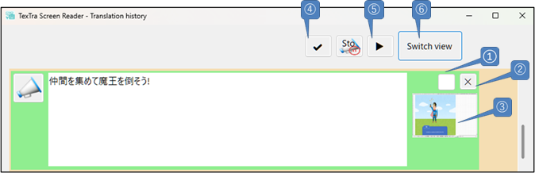
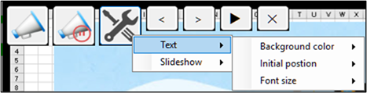
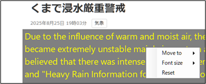
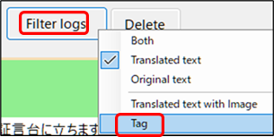
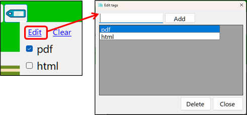

Translation History

① Selected
Checkbox
Mark the target translation as selected for use with
other features.
② Delete the translation
data.
③ Display an image of the screen during range selection for
translation.
( "If the
original text has not been retrieved from the image, it will not be
displayed.)

④ Select
or deselect all translation entries.
⑤ Slideshow, displaying
selected translations with images one by one.
⑥ Toggle between the
original and translated text.
Source Image Screen
The translated text is
displayed on the screen where the original was
captured.
When you move the cursor to the
top-left corner, buttons will
appear.

① You
can configure settings for the source image screen.
Set
options such as translation display and the timing for automatically showing the
next translation.

You can drag the translation
display area and place it freely.
You can also
change the design for each image via the right-click
menu.

Tag feature
On the main screen, you can add
tags to each translation result.
In the log screen, tags
are displayed for each translation result,
and you can
filter the results by tags.
Add tags
on the main screen

Select tags to
display on the log screen

Only the translation results
with the specified tags are displayed.

To add tags, please press the
“Edit” button.
